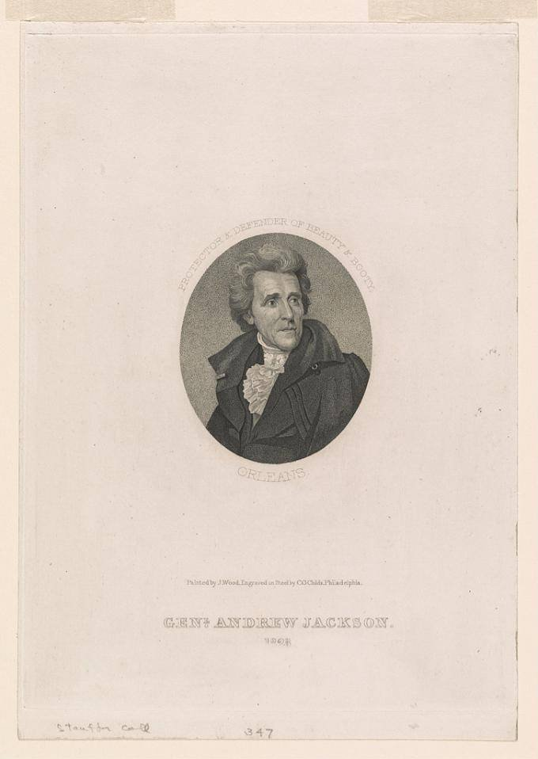

| Field | Detail |
| TOC Fit | Chapter 9 · Essay prompt 9.5 (Why Jackson Won in 1828) |
| Why Here | A campaign-year portrait that framed Jackson in the words of his most famous victory. Students can use it to see how the campaign sold Jackson’s military fame, and how a print sized like a book frontispiece fit into the flood of Jackson biographies published that year. |
| Treatment | Public-domain image; printed lettering transcribed |
During the 1828 campaign, Jackson’s supporters made the Battle of New Orleans (January 8, 1815) the center of his public image. Parades, hickory-pole raisings, songs, and anniversary celebrations of the battle kept the victory before voters, and publishers issued biographies of Jackson with engraved portraits. Cephas G. Childs, a Philadelphia engraver and publisher, based this oval bust on an 1824 painting by Joseph Wood. The lettering, “Protector & Defender of Beauty & Booty,” recalls a story that the British had used the watchword “Beauty and Booty” for the attack on New Orleans, promising their troops the city’s plunder and women. By presenting Jackson as the city’s protector, the print cast him as the defender of American homes and families. Editorial note. Image from the Library of Congress Prints and Photographs Division (PGA - Childs--Andrew Jackson … (A size)), digitized from the original print (LC-DIG-ds-00682); the Library states “No known restrictions on publication.” The lettering is transcribed from the print’s title as cataloged by the Library and should be checked against the image. The story of the British “Beauty and Booty” watchword was widely repeated in the 1820s but was never proved. The Norton Source Collection does not include this print. CAUTION: This is a campaign image made to promote Jackson. Text transcribed for this reader from the repository image; illegible words are marked [illegible]. |
|
 |
|
UNIT 3 · AN EXPANDING NATION | HISTORY B17A | DANIEL GARZA, M.A.
|